Case study 02 · Sell
PBF. It started with a truck.
490% return on ad spend on its best campaign. One truck became branches in Lebanon and Abu Dhabi.
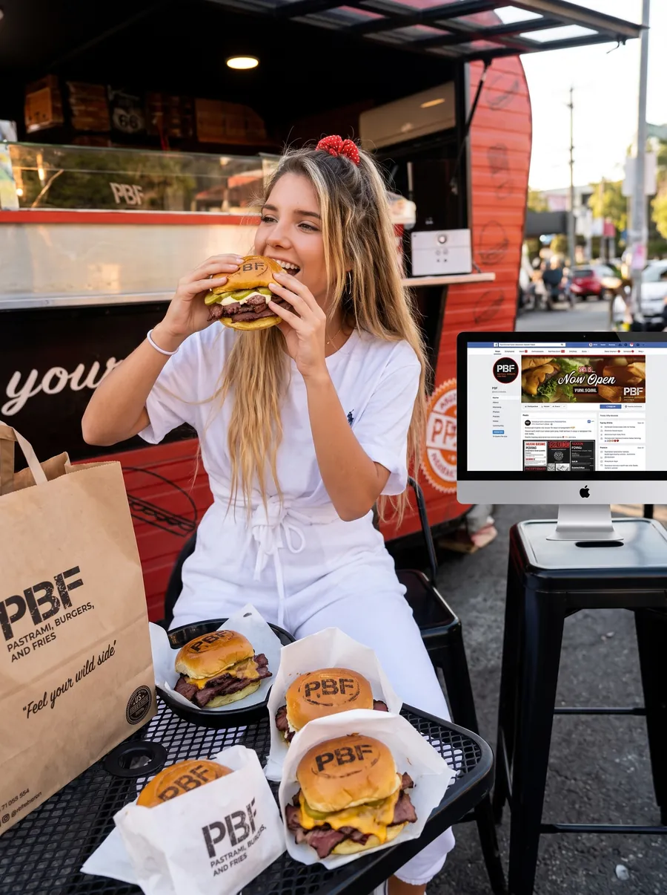
The problem
New York-style pastrami sliders, in a market that had barely tasted pastrami.
The owners had a first-to-market product: pastrami, angus and chicken sliders, potato dippers and a wall of homemade sauces. But nobody craves something they don’t understand, and premium sliders at full price need the value understood before the menu is even read. And it all started from a single food truck.
What I saw
Being first only helps if people know what you’re first at.
So the name had to do the explaining. PBF: Pastrami, Burgers & Fries is clear and simple. The name is the menu, and it claims the category before anyone else can. The brand around it had to be bold, loud and unmistakably street, to taste the way the food does.
The decision
Teach before you sell. For three months before the truck opened, we ran educational content: what Black Angus is, why marbled meat tastes better, what makes pastrami pastrami. By opening day, people knew why the sliders cost what they did, and they were asking when they could try them.
After the launch, I tested before I spent. Awareness ads came first, in several combinations: one targeted only the truck’s neighbourhood in Naccache, another all of Lebanon. Once we knew what worked, a conversion campaign put the budget behind it.
What I delivered
- Naming and brand strategy
- Identity: logo, sub-logos, grid, palette and type
- The line “Feel your wild side”
- Truck branding and closed-truck graffiti
- Menus for the truck, the second location, fliers and Instagram
- Packaging, branded buns and the Angus seal
- Posters and combos: Lunchbox, Triple B, Chicken Sting
- Pre-launch educational carousels
- GIF games and story trivia
- A comic-book story of opening day
- Influencer and foodie program
- Awareness and conversion ads, including Easter Feaster
What changed
- 490%sales return on ad spend from the Easter Feaster campaign
- 400%+sales return on ad spend across the launch campaigns
- 12%more delivery calls after the Instagram menu
- 49kimpressions at launch
- 421comments on launch posts
- 440kpotential reach from foodie reviews
The truck drew crowds all day, all week, with blog coverage to match. One pre-launch post alone drew 141 organic likes and 30 genuine comments with no ad spend. A single “how many patties will the monster eat?” game pulled 180 comments.
The queue built the restaurant. PBF went on to open branches in Lebanon and Abu Dhabi.
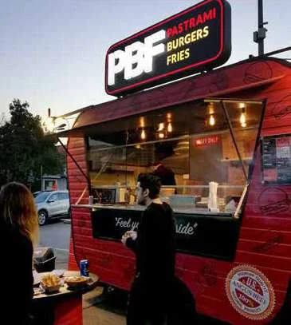
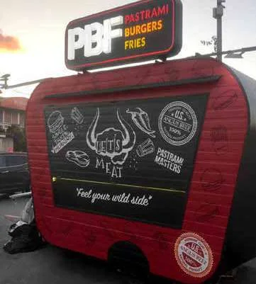
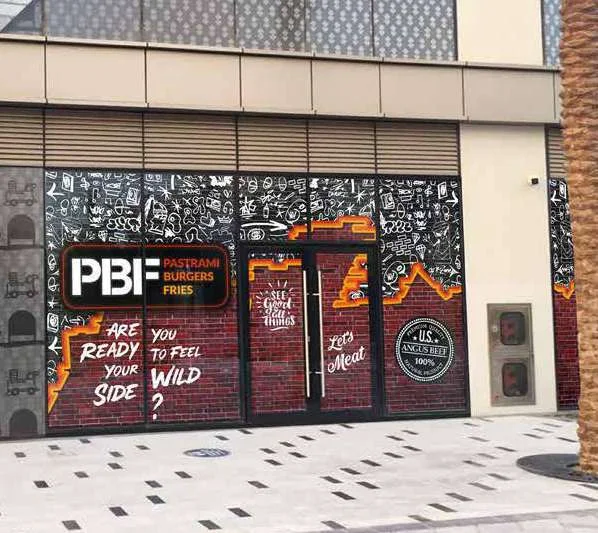
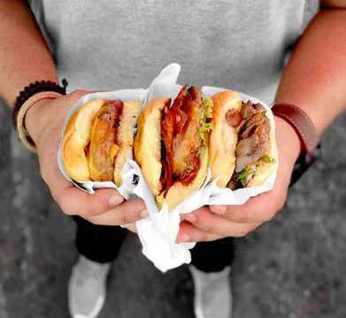
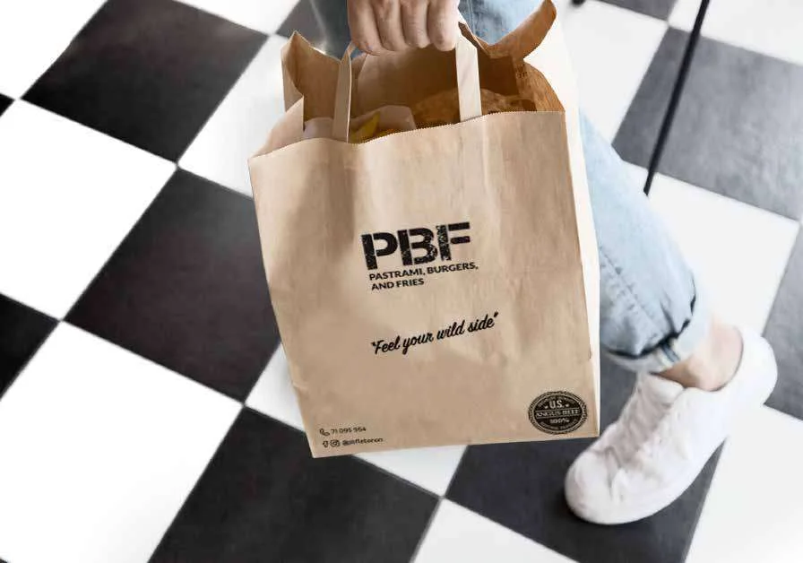
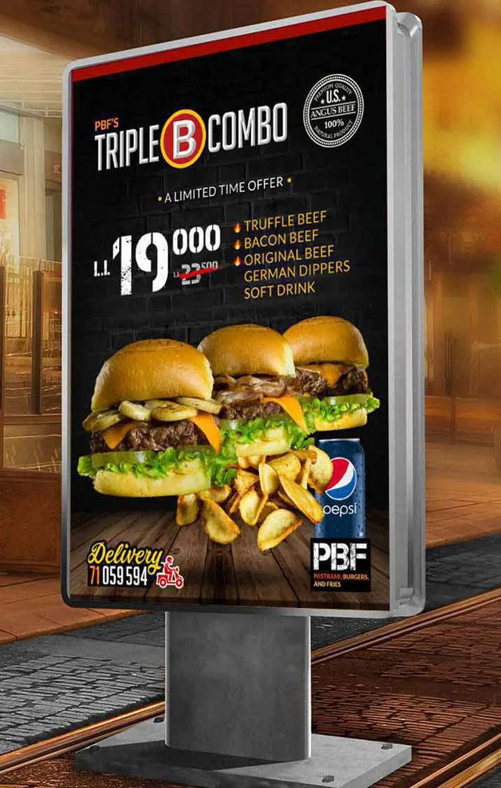
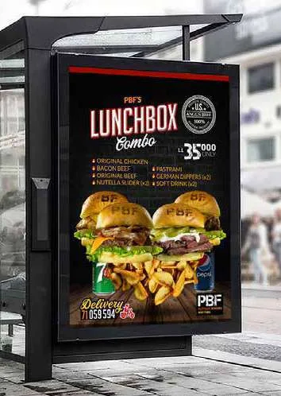
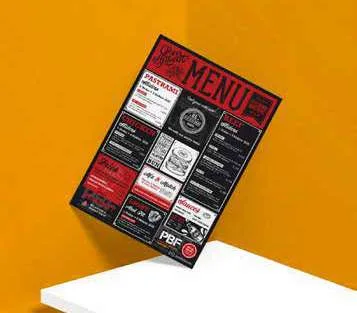
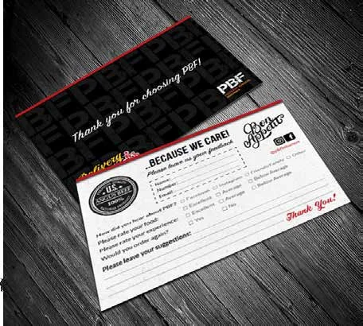
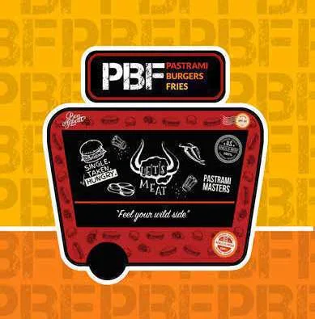
“It was a pleasure working with Mo during the branding and launch of PBF. He understood the core branding principles we wanted and helped us communicate the message to the public and position our brand to its current status. Clean work, diligent understanding and a very genuine leader. Highly recommended!”
Your story could be next.
Tell me what you’re building. I reply within two working days, and the first conversation is on me.